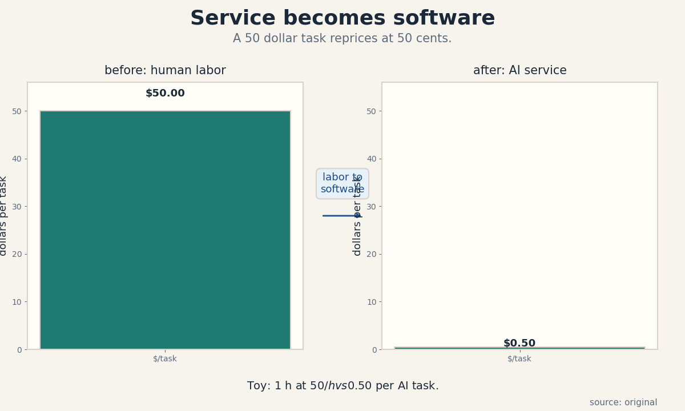
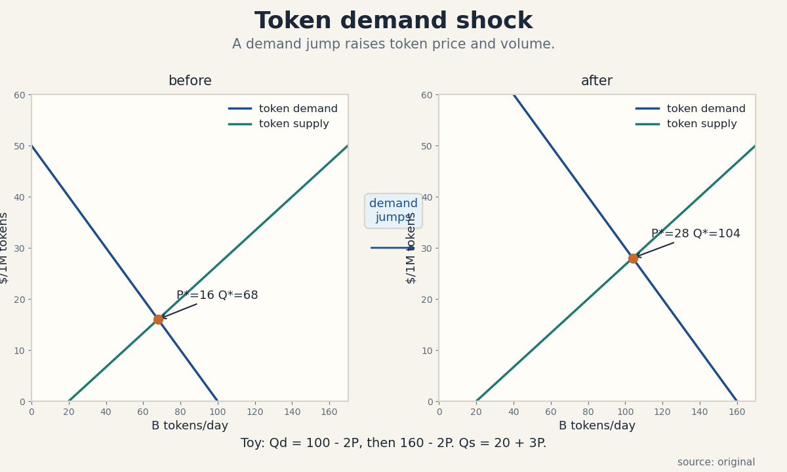
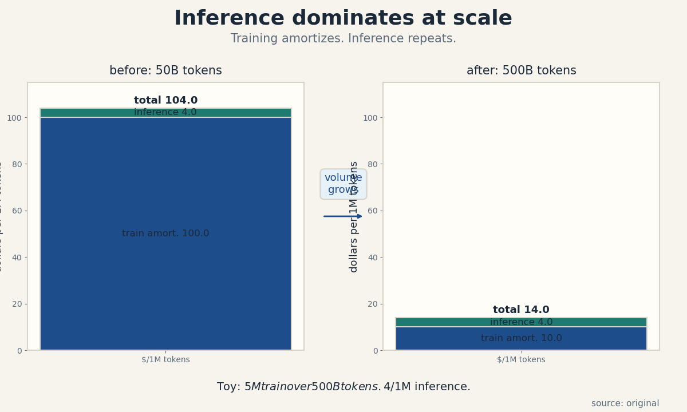
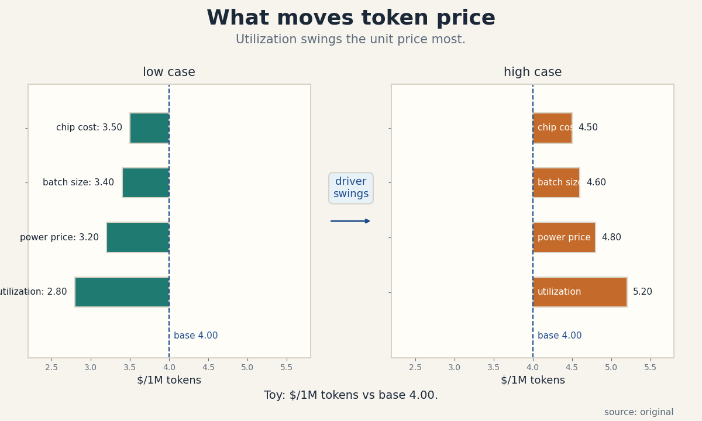

U03 · Enterprise token markets
U03 , Enterprise infrastructure and token markets
Parent unit: mse435-U03. Bridges: P16, P23, P24. Local
remediation in prerequisites.md (U03-R1 to U03-R3). Shared
bridges linked, not rebuilt.
Claim class: OFFICIAL-SCHEDULE (sessions 4-5: “Infrastructure, Enterprise AI, and Service As a Software” with Ali Ghodsi, and “Infrastructure and Capstone Case” with Sachin Katti, materials page SRC-00). Every leaf: PLANNED / SOURCE ATTRIBUTION PENDING. Toy numbers are computed locally and labeled TOY. Speaker forecasts carry evidence labels. The economics/engineering boundary is strict: token prices, contracts, and market claims are economics, never agent implementation.
Not-yet-understood dependency list (unit level)
- Token billing blocks (U03-R1) , needed for C05, C11.
- Contract present value (U03-R2) , needed for C08.
- Latency versus throughput (U03-R3) , needed for C06, C07.
- NPV comparison (U01-C04) , needed for C08, C09.
mse435-U03-C01 , service-as-software thesis
Claim class. OFFICIAL-SCHEDULE. Status. PLANNED / SOURCE ATTRIBUTION PENDING.
1. Source mapping, scope, objectives, dependencies
Maps to week 4 (Ali Ghodsi, Databricks: “Infrastructure, Enterprise AI, and Service As a Software”, SRC-00). Scope: the thesis that AI turns labor-like services into software-priced products. Objective: state the thesis precisely and compute the repricing on a toy. Dependencies: U01-C03, P24.
2. Motivating question and tiny toy
Motivating question: what happens to a 50-dollar support ticket when software can resolve it for 50 cents? Tiny toy: one ticket costs 1 hour of human time at 50 dollars per hour, or one AI task at 0.50 dollars.
3. Plain-language mental model
Services sell hours. Software sells copies. AI lets a service be delivered like software: the marginal task costs compute, not a person’s hour. The thesis says the price of labor-shaped work collapses toward the compute cost, and the firms that own the software capture the spread.
4. Variables, units, shapes, assumptions
Human cost per task: dollars (wage x hours). AI cost per task: dollars (tokens x price + overhead). Repricing ratio = human / AI, a pure number. Assumptions: the AI task meets the quality bar (the thesis fails otherwise), and demand exists at the new price.
5. Justified derivation
Ratio = 50 / 0.50 = 100. The task reprices by two orders of magnitude. The economics: human cost is linear in tasks (each task needs its hour), while AI cost is sublinear (fixed model cost spread over tasks plus tiny marginal compute). The ratio grows with volume because the human side cannot spread its fixed cost the same way.
6. Computed numerical example
Toy: 10,000 tickets per month. Human: 10,000 x 50 = 500,000 dollars. AI: 10,000 x 0.50 = 5,000 dollars plus 20,000 dollars of fixed integration and oversight = 25,000 dollars. Saving = 475,000 dollars per month. Break-even quality: if the AI resolves only 70 percent and humans handle the rest, cost = 0.7 x 5,000 + 0.3 x 500,000 x (1/10,000 per ticket)… redo cleanly: AI handles 7,000 at 0.50 = 3,500, humans handle 3,000 at 50 = 150,000, plus fixed 20,000 = 173,500. Still a 65 percent saving, but the human tail dominates the cost.
7. Algorithm and minimal implementation
def service_cost(tasks, human_each, ai_each, fixed, ai_share=1.0):
ai_n = tasks * ai_share
human_n = tasks - ai_n
return ai_n * ai_each + human_n * human_each + fixed
print(service_cost(10_000, 50, 0.50, 20_000))
print(service_cost(10_000, 50, 0.50, 20_000, 0.70))
8. Correctness checks and expected output
Expected: 25000.0 then 173500.0. Check: at ai_share = 0
the cost is all-human plus fixed. Check: at ai_share = 1 the
human term is zero. Check units: dollars per month.
9. Complexity, costs, stability
O(1). The fragile input is ai_share at quality: it is measured, not assumed. A pilot that measures resolution rate is worth more than the toy.
10. Nearest alternatives and selection boundaries
Alternative: labor arbitrage (cheaper humans), which cuts the 50 dollars to 15 but keeps the linear shape. Use it where AI quality fails. The software thesis wins where quality holds and volume is large. Alternative: full automation with no human tail, which the toy shows is rarely optimal, the 70-percent case keeps humans for the hard tail.
11. Failure case, broken assumption, counterexample
Break the quality bar. The AI resolves tickets fast but wrong, and wrong answers cost 200 dollars each in churn. At a 10 percent error rate on 10,000 tickets: 1,000 x 200 = 200,000 dollars of damage, wiping the saving. Counterexample: high-trust services (medical, legal). The liability cost of an error exceeds any labor saving, so the service stays human-priced.
12. Research reading and falsifiable extension
Official anchor: week 4 session and SRC-14/15 (Paik, Ghodsi), titles only, [SPEAKER CLAIM, EVIDENCE PENDING]. Falsifiable extension: pick one enterprise AI rollout with public numbers. Hypothesis: cost per task falls 10x+ while the human tail keeps 20-40 percent of tasks. It fails if the tail vanishes, which would mean full automation, not the thesis’s hybrid.
13. Assessment
Breadth recall:
- State the service-as-software thesis in one sentence.
- Why does the repricing ratio grow with volume?
Deep oral ladder:
- Define the thesis without jargon.
- Toy: 5,000 tasks, human 40, AI 0.40, fixed 10k. Compute both costs.
- Derive the 100x ratio and name the linearity difference.
- Implement service_cost and state the ai_share = 0 check.
- Compare with labor arbitrage: when is each right?
Unfamiliar transfer: the AI is 90 percent cheaper but wrong answers cost 500 dollars each in refunds. Set up the inequality that decides deployment.
14. Lab / exercises
See labs/u03_lab.md, task 1 (repricing with error costs).
15. Visual units and audit
visuals/figures/u03_service_software.png: before/after per
task cost, one rule (“labor to software”), computed 50.00
versus 0.50 dollars. Source: original. Alt text: two bars,
the after bar is a sliver next to the before bar. Audit:
PASS.

mse435-U03-C02 , enterprise integration
Claim class. OFFICIAL-SCHEDULE. Status. PLANNED / SOURCE ATTRIBUTION PENDING.
1. Source mapping, scope, objectives, dependencies
Maps to week 4. Scope: what it costs to plug AI into a real enterprise. Objective: enumerate the integration cost layers and show why the model is the cheap part. Dependencies: C01, P24.
2. Motivating question and tiny toy
Motivating question: the model API costs 5,000 dollars a month, but the project costs 500,000. Where did the money go? Tiny toy: API 5k, data plumbing 150k, security review 100k, workflow change 200k, training 45k.
3. Plain-language mental model
The model is the engine, integration is the car around it. Enterprises buy outcomes, and the outcome needs data connections, access controls, audits, retrained staff, and changed processes. Each layer is a fixed cost that must be paid before the first token creates value.
4. Variables, units, shapes, assumptions
Layers: model (dollars per month, variable), data plumbing (one-time), security/compliance (one-time plus annual), workflow redesign (one-time), training (one-time). Total first-year cost = sum. Assumptions: the layers are separable and the estimates are honest (no optimism bias).
5. Justified derivation
First-year total = 5,000 x 12 + 150,000 + 100,000 + 200,000 + 45,000 = 60,000 + 495,000 = 555,000 dollars. The model is 10.8 percent of the first-year cost. The derivation is addition, the lesson is the ratio. Anyone who budgets the model and forgets the car is off by 9x.
6. Computed numerical example
Toy above: 555,000 first year. Year 2: model 60,000 + security annual 30,000 + maintenance 50,000 = 140,000. The two-year total is 695,000, of which the model is 120,000 (17 percent). Integration dominates early, then fades, the decision metric is the multi-year total, not the API bill.
7. Algorithm and minimal implementation
def integration_cost(api_mo, plumbing, security_yr1, workflow,
training, security_annual=30_000,
maint_annual=50_000, years=2):
yr1 = api_mo * 12 + plumbing + security_yr1 + workflow \
+ training
later = (years - 1) * (api_mo * 12 + security_annual
+ maint_annual)
return yr1, yr1 + later
print(integration_cost(5_000, 150_000, 100_000, 200_000,
45_000))
8. Correctness checks and expected output
Expected: (555000, 695000). Check: at years = 1 the total
equals yr1. Check: the model share rises with years. Check
units: dollars.
9. Complexity, costs, stability
O(1). The estimates are the risk: integration overruns are the norm. Pad each layer and track actuals against the budget monthly.
10. Nearest alternatives and selection boundaries
Alternative: buy a vertical app (integration included in the price), which converts the fixed layers into a subscription. Use it when the workflow is standard. The build-up wins when the workflow is custom and the data is proprietary.
11. Failure case, broken assumption, counterexample
Break separable layers. A security review that fails in month 8 restarts the data plumbing, the layers are coupled and the sum understates the cost. Counterexample: the “pilot that never scales”. Integration is paid for 5 users, value needs 5,000, the per-user math never closes.
12. Research reading and falsifiable extension
Official anchor: week 4 session, [SPEAKER CLAIM, EVIDENCE PENDING]. Falsifiable extension: collect three public enterprise AI case studies with cost breakdowns. Hypothesis: the model is under 25 percent of first-year cost in all three. It fails if any case is model-dominated, which would mark a genuinely light integration.
13. Assessment
Breadth recall:
- Name the five integration cost layers.
- Why is the API bill a bad budget proxy?
Deep oral ladder:
- Define integration cost without jargon.
- Toy: compute the two-year total above by hand.
- Explain the 9x lesson from the ratio.
- Implement integration_cost and state the years = 1 check.
- Compare build-up with a vertical app: when is each right?
Unfamiliar transfer: security review fails in month 8 and restarts data plumbing. Rework the budget: which lines move and what contingency covers it?
14. Lab / exercises
See labs/u03_lab.md, task 2 (integration budget with
overrun).
15. Visual units and audit
Table in the lesson (layer, year-1, year-2+). Logged as an honest table medium.
mse435-U03-C03 , open/closed stacks
Claim class. OFFICIAL-SCHEDULE. Status. PLANNED / SOURCE ATTRIBUTION PENDING.
1. Source mapping, scope, objectives, dependencies
Maps to weeks 4-5 (open/closed is the week 5 “openness” theme, SRC-18 title). Scope: the choice between open weights and closed APIs. Objective: compare the stacks on cost, control, and lock-in. Dependencies: C02, P24.
2. Motivating question and tiny toy
Motivating question: open weights are free, so why does anyone pay for an API? Tiny toy: open stack costs 30k per month to host (C01 math at volume) plus 200k integration, closed API costs 40k per month with 50k integration.
3. Plain-language mental model
Open means you hold the weights: no per-token bill, but you pay to host, and you own the operations. Closed means you rent intelligence: per-token bill, no hosting, but the vendor sets the price and the rules. The choice is buy-vs-rent applied to the model layer (U02-C08), plus a control premium.
4. Variables, units, shapes, assumptions
Open: hosting dollars per month + integration one-time + ops staff. Closed: tokens x price + integration one-time. Control premium: the extra dollars the firm pays for data control and no vendor dependence. Assumptions: the open model meets the quality bar, and hosting cost is estimated at real utilization.
5. Justified derivation
Two-year open: 30,000 x 24 + 200,000 = 920,000. Two-year closed: 40,000 x 24 + 50,000 = 1,010,000. Open wins by 90,000 dollars before the control premium. If the firm values control at more than -90,000 (i.e., even slightly), open wins, the premium only needs to be non-negative here. The derivation prices the premium as the residual: premium = closed cost - open cost at indifference.
6. Computed numerical example
Toy above: open 920k, closed 1,010k over two years. Now cut volume in half: open hosting falls only to 20k per month (fixed-heavy), closed API falls to 20k per month (pure variable). Open: 20,000 x 24 + 200,000 = 680,000. Closed: 20,000 x 24 + 50,000 = 530,000. Closed wins by 150,000. The stack choice flips with volume, exactly like build vs lease.
7. Algorithm and minimal implementation
def open_cost(host_mo, integ, months=24):
return host_mo * months + integ
def closed_cost(api_mo, integ, months=24):
return api_mo * months + integ
print(open_cost(30_000, 200_000), closed_cost(40_000, 50_000))
print(open_cost(20_000, 200_000), closed_cost(20_000, 50_000))
8. Correctness checks and expected output
Expected: (920000, 1010000) then (680000, 530000).
Check: at zero months both equal their integration. Check:
the winner flips with volume. Check units: dollars.
9. Complexity, costs, stability
O(1). The hidden term is ops talent: hosting needs ML engineers the firm may not have, and their cost hides in “hosting” or appears nowhere.
10. Nearest alternatives and selection boundaries
Alternative: hybrid (open for sensitive data, closed for bursty overflow). Use it when data classes differ. Pure open wins at high steady volume with control needs, pure closed wins at low or spiky volume.
11. Failure case, broken assumption, counterexample
Break the quality bar. The open model is 5 points worse on the firm’s eval, and each point costs 100k in lost conversion. The 90k hosting win is noise against a 500k quality loss. Counterexample: the vendor raises API prices 40 percent in year 2. The closed two-year math used a flat price, the real closed cost is higher and the decision flips back.
12. Research reading and falsifiable extension
Official anchor: SRC-18 (“Scaling AI at the Speed of Openness”), title only. Falsifiable extension: track one firm’s public stack choice and its volume growth. Hypothesis: firms switch closed-to-open as volume crosses their crossover. It fails if they stay closed at high volume, which would price the control or talent premium above the hosting saving.
13. Assessment
Breadth recall:
- State the open/closed trade in one sentence each.
- Why does the choice flip with volume?
Deep oral ladder:
- Define the control premium without symbols.
- Toy: compute both two-year totals above by hand.
- Derive the premium as the indifference residual.
- Implement both cost functions and state the flip check.
- Compare pure with hybrid: when is hybrid right?
Unfamiliar transfer: the vendor announces a 40 percent API price rise next year. Rework the two-year closed math and name the contract clause that prevents the surprise.
14. Lab / exercises
See labs/u03_lab.md, task 3 (crossover volume for the
stack choice).
15. Visual units and audit
Table in the lesson (open vs closed at two volumes). Logged as an honest table medium.
mse435-U03-C04 , compute supply
Claim class. OFFICIAL-SCHEDULE. Status. PLANNED / SOURCE ATTRIBUTION PENDING.
1. Source mapping, scope, objectives, dependencies
Maps to week 5 (Katti/OpenAI infrastructure, SRC-00, “The Supply and Demand of AI Tokens”, SRC-19, title only). Scope: where token supply comes from. Objective: derive serving capacity from a GPU fleet. Dependencies: U02-C01, P16.
2. Motivating question and tiny toy
Motivating question: how many tokens per day can 1,000 GPUs serve? Tiny toy: 1,000 GPUs, 50 tokens per second per GPU, 85 percent utilization.
3. Plain-language mental model
Token supply is manufactured: GPUs x speed x utilization. Unlike training (one big job), serving is a factory line: many small jobs sharing the line. Supply grows by adding GPUs or by serving faster (batching, C06 of U04 preview).
4. Variables, units, shapes, assumptions
N: GPU count. s: tokens per second per GPU. U: utilization. Supply per day = N x s x U x 86,400 seconds. Assumptions: speed is sustained (not peak), and the mix of prompt sizes is stable.
5. Justified derivation
1,000 x 50 x 0.85 x 86,400 = 3.672 x 10^12 tokens per day, or 3,672 B tokens per day. In 1M-token blocks: 3,672,000 blocks per day. Each term earns its place: N x s is the line’s rate, U is the share of the rate that is sold, and 86,400 converts seconds to days.
6. Computed numerical example
Toy above: 3.672T tokens per day. At 4 dollars per 1M tokens (C11 toy price), daily revenue capacity = 3,672,000 x 4 = 14.688M dollars per day at full sale. The fleet cost (U02-C01 at 1.08 $/GPU-h x 1,000 x 24) = 25,920 dollars per day. Gross margin per day = 14.66M dollars, which is why serving is attractive and why competition attacks the price.
7. Algorithm and minimal implementation
def token_supply(gpus, tok_per_s, u=0.85):
per_day = gpus * tok_per_s * u * 86_400
return per_day, per_day / 1e6
print(token_supply(1_000, 50))
8. Correctness checks and expected output
Expected: (3.672e12, 3672000.0). Check: supply scales
linearly in each input. Check: units are tokens per day.
Check: at U = 0 supply is 0.
9. Complexity, costs, stability
O(1). The fragile input is s: tokens per second varies 10x with model size and batching. Quote supply as a range over s, not a point.
10. Nearest alternatives and selection boundaries
Alternative: buy tokens on the market (API), which converts the supply question into a price question. Build supply when volume is high and steady (C03 logic), buy when it is low or spiky.
11. Failure case, broken assumption, counterexample
Break stable mix. A flood of long-context requests cuts s from 50 to 15, supply falls 70 percent while the GPU count did not move. Counterexample: the factory line jams. One slow batching policy can idle GPUs between batches, and measured supply undershoots the formula.
12. Research reading and falsifiable extension
Official anchor: SRC-19 (“The Supply and Demand of AI Tokens”), title only, [SPEAKER CLAIM, EVIDENCE PENDING]. Falsifiable extension: benchmark one serving stack’s tokens per second across prompt sizes. Hypothesis: s falls with context length. It fails if s is flat, which would point to a well-batched system.
13. Assessment
Breadth recall:
- Write the token supply formula.
- Why quote supply as a range over s?
Deep oral ladder:
- Define token supply without symbols.
- Toy: 500 GPUs, 40 tok/s, U = 0.9. Compute per day.
- Derive the formula and name the 86,400.
- Implement token_supply and state the linearity check.
- Compare building supply with buying tokens: when is each right?
Unfamiliar transfer: long-context demand triples and s falls 60 percent. Your contracts promise fixed throughput. Name the two levers and which breaks the contract first.
14. Lab / exercises
See labs/u03_lab.md, task 4 (supply under mix shifts).
15. Visual units and audit
Table in the lesson (inputs to tokens per day). Logged as an honest table medium.
mse435-U03-C05 , token demand
Claim class. OFFICIAL-SCHEDULE. Status. PLANNED / SOURCE ATTRIBUTION PENDING.
1. Source mapping, scope, objectives, dependencies
Maps to week 5 (SRC-19, “The Supply and Demand of AI Tokens”, title only). Scope: what buyers want at a token price. Objective: solve the token market equilibrium and a demand shock. Dependencies: U01-C01, C04, U03-R1.
2. Motivating question and tiny toy
Motivating question: a viral app doubles token demand overnight. What happens to the token price? Tiny toy: demand Qd = 100 - 2P, supply Qs = 20 + 3P (B tokens per day, dollars per 1M tokens), then demand jumps to Qd = 160 - 2P.
3. Plain-language mental model
Token demand is appetite for intelligence at a price. Token supply is the factory line from C04. The market clears where they meet. A demand shock walks the price up the supply curve, how far depends on how steep the supply curve is.
4. Variables, units, shapes, assumptions
P: dollars per 1M tokens. Q: B tokens per day. Same linear machinery as U01-C01 with new units. Assumptions: one token price (no tiers), fast clearing, and the shock is demand-only (supply fixed overnight).
5. Justified derivation
P = (a - c)/(b + d), Q = a - bP, from U01-C01. Before: P = (100-20)/5 = 16, Q = 68. After: P = (160-20)/5 = 28, Q* = 104. The shock raises price 75 percent and quantity 53 percent. The steeper the supply (larger d), the more the shock lands on quantity and the less on price.
6. Computed numerical example
Toy above. Revenue before: 16 x 68 = 1,088 (in B-token x $/1M units, i.e. 1.088M dollars per day per the block math: 68B tokens = 68,000 blocks x 16 = 1,088,000 dollars). Revenue after: 28 x 104 = 2,912, i.e. 2.912M dollars per day. The shock nearly triples daily revenue, which is why suppliers race to add the line from C04.
7. Algorithm and minimal implementation
def token_equilibrium(a, b, c, d):
p = (a - c) / (b + d)
return p, a - b * p
print(token_equilibrium(100, 2, 20, 3))
print(token_equilibrium(160, 2, 20, 3))
8. Correctness checks and expected output
Expected: (16.0, 68.0) then (28.0, 104.0). Check: plug
back into both curves. Check: the shock raises both P and
Q. Check: revenue math uses the block conversion.
9. Complexity, costs, stability
O(1). Real token markets are tiered (input vs output prices, priority lanes), so the single price is a simplification. Use it for direction, not for quoting.
10. Nearest alternatives and selection boundaries
Alternative: administered pricing (the vendor sets the price and lets quantity adjust), which is how most API markets actually work. The clearing model wins when spot or auction pricing exists. Never read a posted API price as a market clearing price without checking for queues or quotas.
11. Failure case, broken assumption, counterexample
Break fast supply. Overnight, supply cannot move, so the short-run supply curve is vertical: the whole shock lands on price (P* jumps to 70 at Q = 20+… solve 160 - 2P = 68 fixed supply: P = 46). The toy’s 28 assumes supply adjustment that takes weeks. Counterexample: the vendor holds price flat and rations by rate limits. Quantity, not price, absorbs the shock.
12. Research reading and falsifiable extension
Official anchor: SRC-19, title only, [SPEAKER CLAIM, EVIDENCE PENDING]. Falsifiable extension: track one provider’s price and status page through a demand spike. Hypothesis: rate limits bind before prices move. It fails if prices move first, which would mark a real spot market.
13. Assessment
Breadth recall:
- Write the token equilibrium with its units.
- Why does a steeper supply curve mute the price jump?
Deep oral ladder:
- Define token demand without symbols.
- Toy: solve Qd = 100 - 2P, Qs = 20 + 3P by hand.
- Derive the after-shock P* and explain the 75 percent.
- Implement token_equilibrium and state the plug-back check.
- Compare clearing with administered pricing: which fits API markets?
Unfamiliar transfer: the vendor freezes price and rations by rate limit. Who gets the tokens, and what is the implicit price the rationed-out buyer pays?
14. Lab / exercises
See labs/u03_lab.md, task 5 (shock with vertical
short-run supply).
15. Visual units and audit
visuals/figures/u03_token_market.png: before/after demand
shock, one rule (“demand jumps”), computed P 16 to 28 and
Q 68 to 104. Source: original. Alt text: two panels with
demand, supply, and marked equilibria, the after panel is
higher on both axes. Audit: PASS.

mse435-U03-C06 , capacity bottlenecks
Claim class. OFFICIAL-SCHEDULE. Status. PLANNED / SOURCE ATTRIBUTION PENDING.
1. Source mapping, scope, objectives, dependencies
Maps to weeks 4-5. Scope: finding the binding stage in token serving. Objective: identify the bottleneck from stage capacities and compute the system rate. Dependencies: P16, C04, U03-R3.
2. Motivating question and tiny toy
Motivating question: GPUs sit idle while requests queue. Which stage is the bottleneck? Tiny toy: three stages with capacities 100, 40, 80 requests per second.
3. Plain-language mental model
A serving stack is a line of stations: network in, batching, GPU compute, network out. The line moves at the slowest station’s pace. Adding GPUs when the batcher is the bottleneck buys idle silicon.
4. Variables, units, shapes, assumptions
Stage capacities k_i: requests per second. System rate = min(k_i). Utilization of stage i = rate / k_i. Assumptions: steady flow, no batching gains counted twice, and one request class.
5. Justified derivation
Rate = min(100, 40, 80) = 40 rps. The batcher binds. Utilizations: 40/100 = 40 percent, 40/40 = 100 percent, 40/80 = 50 percent. Money spent raising stage 1 or 3 is wasted until the batcher moves. Each term earns its place: the minimum is the definition of a serial line’s rate.
6. Computed numerical example
Toy: batcher upgraded from 40 to 90 rps at a cost of 200k. New rate = min(100, 90, 80) = 80 rps. The GPU stage now binds at 80 percent… recompute: utilizations 80/100 = 80 percent, 80/90 = 89 percent, 80/80 = 100 percent. The 200k doubled throughput (40 to 80). A further 200k on the batcher (to 130) gives min(100, 130, 80) = 80: zero gain. The second 200k should go to stage 3.
7. Algorithm and minimal implementation
def bottleneck(caps):
rate = min(caps)
return rate, [rate / c for c in caps]
print(bottleneck([100, 40, 80]))
print(bottleneck([100, 90, 80]))
8. Correctness checks and expected output
Expected: (40, [0.4, 1.0, 0.5]) then (80, [0.8,
0.888..., 1.0]). Check: the bottleneck stage shows 1.0.
Check: raising a non-binding stage does not move the rate.
Check units: requests per second.
9. Complexity, costs, stability
O(stages). The trap is the moving bottleneck: fix one and the next binds, so budget the sequence, not one fix.
10. Nearest alternatives and selection boundaries
Alternative: parallelize the bottleneck (more batcher instances). Use it when the stage scales out. The upgrade wins when the stage is a single better box. Never buy more of the non-binding stage “for headroom” before measuring.
11. Failure case, broken assumption, counterexample
Break one request class. Long-context requests consume the GPU 10x longer, the bottleneck moves with the mix, and the static min() mislabels it. Counterexample: the queue itself. At 95 percent utilization of the bottleneck, queueing delay explodes (U03-R3), the “rate” is fine but latency is not, and users feel a bottleneck the throughput math misses.
12. Research reading and falsifiable extension
Read P16 on bottlenecks and stragglers. Falsifiable extension: load-test one serving stack and record per-stage utilization. Hypothesis: one stage sits at ~100 percent while others sit low. It fails if all stages saturate together, which would point to a balanced system or a misconfigured test.
13. Assessment
Breadth recall:
- State the bottleneck rule.
- Why does fixing one bottleneck reveal the next?
Deep oral ladder:
- Define a bottleneck without symbols.
- Toy: caps [60, 60, 30]. Find the rate and utils.
- Explain why money on a non-binding stage is wasted.
- Implement bottleneck and state the 1.0 check.
- Compare upgrading with parallelizing: when is each right?
Unfamiliar transfer: the mix shifts to long context and the GPU stage binds instead of the batcher. Your budget assumed the batcher. Rework the plan in two sentences.
14. Lab / exercises
See labs/u03_lab.md, task 6 (bottleneck sequence).
15. Visual units and audit
Table in the lesson (stage, capacity, utilization, binds?). Logged as an honest table medium.
mse435-U03-C07 , inference versus training economics
Claim class. OFFICIAL-SCHEDULE. Status. PLANNED / SOURCE ATTRIBUTION PENDING.
1. Source mapping, scope, objectives, dependencies
Maps to week 5. Scope: the two cost shapes of a model business. Objective: show why training amortizes and inference dominates at scale. Dependencies: C04, U01-C03, U03-R3.
2. Motivating question and tiny toy
Motivating question: training cost 5M dollars once. Does it matter? Tiny toy: 5M training, 500B lifetime tokens, 4 dollars per 1M inference cost.
3. Plain-language mental model
Training is tuition: paid once, sunk, then spread over every token the model ever serves. Inference is rent: paid per token, forever. At small volume tuition dominates the unit cost, at large volume rent dominates and tuition vanishes into the rounding.
4. Variables, units, shapes, assumptions
T: training dollars (one-time). V: lifetime tokens. Train amortized per 1M = T / V x 10^6. Inference i: dollars per 1M (unit cost). Unit cost = T/V x 10^6 + i. Assumptions: V is known (it is a forecast), and i is constant in volume.
5. Justified derivation
At V = 50B: 5M/50B x 10^6 = 100 dollars per 1M. Unit = 104. At V = 500B: 5M/500B x 10^6 = 10 dollars per 1M. Unit = 14. Volume grew 10x, unit cost fell 7.4x, and the training share fell from 96 percent to 71 percent of the unit… recompute: 100/104 = 96 percent, 10/14 = 71 percent. Each term earns its place: T/V is the fixed-cost spread, i is the marginal floor.
6. Computed numerical example
Toy above. The crossover where training equals inference: T/V x 10^6 = i gives V = 5M/4 x 10^6 = 1.25T tokens. Below 1.25T lifetime tokens, tuition dominates, above, rent dominates. Most successful models cross it, most failed ones never get near.
7. Algorithm and minimal implementation
def unit_cost(train, lifetime_tokens, infer_per_1m):
amort = train / lifetime_tokens * 1e6
return amort, amort + infer_per_1m
print(unit_cost(5e6, 50e9, 4.0))
print(unit_cost(5e6, 500e9, 4.0))
8. Correctness checks and expected output
Expected: (100.0, 104.0) then (10.0, 14.0). Check: the
amortized part falls with V. Check: the total never falls
below i. Check units: dollars per 1M tokens.
9. Complexity, costs, stability
O(1). The forecast V is the whole argument, a model that serves 10x fewer tokens than planned has 10x the unit cost. Never quote unit cost without the V assumption.
10. Nearest alternatives and selection boundaries
Alternative: fine-tune per customer (many small T’s), which keeps tuition relevant at the customer level. Use it when tasks differ deeply. One big T wins when one model serves all tasks.
11. Failure case, broken assumption, counterexample
Break constant i. At high batching i falls with volume too, and the unit cost falls faster than the toy. Counterexample: the model is retrained monthly. T is then recurring, not one-time, and the tuition never amortizes away.
12. Research reading and falsifiable extension
Read U01-C03 on fixed-cost spread. Falsifiable extension: take one provider’s price history and a public training-cost estimate. Hypothesis: price tracks i, not T/V, after the first year. It fails if prices step down exactly when new cheaper training runs land, which would mark T as the price driver.
13. Assessment
Breadth recall:
- State the two cost shapes in one sentence each.
- Why does training vanish from unit cost at scale?
Deep oral ladder:
- Define amortization without symbols.
- Toy: T = 2M, V = 100B, i = 3. Compute the unit cost.
- Derive the crossover V and explain it.
- Implement unit_cost and state the floor check.
- Compare one big T with per-customer fine-tunes: when is each right?
Unfamiliar transfer: the lab retrains monthly at 500k per run. Rework the unit-cost formula and say when the business still works.
14. Lab / exercises
See labs/u03_lab.md, task 7 (unit cost vs volume curve).
15. Visual units and audit
visuals/figures/u03_infer_train.png: before/after volume,
one rule (“volume grows”), computed totals 104.0 and 14.0
dollars per 1M tokens with the training slice shrinking.
Source: original. Alt text: two stacked bars (training
amortized, inference), the after bar is far shorter. Audit:
PASS.

mse435-U03-C08 , long contracts
Claim class. OFFICIAL-SCHEDULE. Status. PLANNED / SOURCE ATTRIBUTION PENDING.
1. Source mapping, scope, objectives, dependencies
Maps to weeks 4-5 (enterprise buying). Scope: multi-year commits for compute or tokens. Objective: price a contract against falling market prices and name the risks. Dependencies: U01-C04, U03-R2.
2. Motivating question and tiny toy
Motivating question: a vendor offers 3 years of tokens at 3 dollars per 1M, prepaid 30 percent. The market is 4 dollars today but falling. Sign? Tiny toy: commit 10M tokens per month, 36 months, market path 4.00, 3.00, 2.00 per year.
3. Plain-language mental model
A long contract is insurance: you lock a price and the vendor locks your demand. Insurance has a premium: if the market falls, you overpay, if it spikes, you win. The fair question is never “is 3 dollars good?” but “is 3 dollars good against the price path and the exit terms?”
4. Variables, units, shapes, assumptions
Commit Q per period, contract price p_c, market path p_t, discount r. Contract PV = sum p_c x Q / (1+r)^t. Market PV = sum p_t x Q / (1+r)^t. Assumptions: Q is fixed (take-or-pay), and the market path is the honest forecast.
5. Justified derivation
Q = 10M blocks… careful with units: 10M tokens per month = 10 blocks of 1M. Per year: 120 blocks. Year prices: 4, 3, 2. Market PV at 10 percent: 120 x (4/1.1 + 3/1.1^2 + 2/1.1^3) = 120 x (3.636 + 2.479 + 1.503) = 120 x 7.618 = 914.2 dollars. Contract PV: 120 x 3 x (1/1.1 + 1/1.1^2 + 1/1.1^3) = 360 x 2.4869 = 895.3 dollars. The contract wins by 18.9 dollars in this toy, entirely because year-1 market is high. Each term earns its place: discounting weights near years more, where the contract’s lock helps most.
6. Computed numerical example
Toy above: contract 895.3 vs market 914.2. Now make the market fall faster (4, 2, 1): market PV = 120 x (3.636 + 1.653 + 0.751) = 120 x 6.040 = 724.8. The contract loses by 170.5 dollars. The sign of the deal flips on the price path, not on the headline 3 dollars.
7. Algorithm and minimal implementation
def contract_pv(q_yr, p_c, market_path, r=0.10):
a = sum(1 / (1 + r) ** (t + 1)
for t in range(len(market_path)))
c_pv = q_yr * p_c * a
m_pv = q_yr * sum(p / (1 + r) ** (t + 1)
for t, p in enumerate(market_path))
return c_pv, m_pv
print(contract_pv(120, 3.0, [4.0, 3.0, 2.0]))
print(contract_pv(120, 3.0, [4.0, 2.0, 1.0]))
8. Correctness checks and expected output
Expected: (895.28..., 914.19...) then (895.28...,
724.84...). Check: at a flat market path of 3.0 both are
equal. Check: the contract PV does not move with the path.
Check units: dollars.
9. Complexity, costs, stability
O(T). The take-or-pay assumption is the risk: if usage falls short, you pay for ghosts. Model the commit at the P10 usage case, not the plan case.
10. Nearest alternatives and selection boundaries
Alternative: short commits with renewal options, which keep flexibility at a price premium. Use them when the price path is uncertain. The long lock wins when usage is certain and the path is flat or rising.
11. Failure case, broken assumption, counterexample
Break fixed Q. Usage halves in year 2, the contract still bills 120 blocks and the effective price per used token doubles. Counterexample: the vendor’s escape hatch. A “price match” clause that the vendor controls is not insurance, read who triggers it.
12. Research reading and falsifiable extension
Read U01-C04 on NPV. Falsifiable extension: survey three enterprises on commit versus actual usage. Hypothesis: most over-commit by 20 percent+. It fails if most hit 95 percent +, which would validate take-or-pay discipline.
13. Assessment
Breadth recall:
- Write the contract-vs-market PV comparison.
- Why is the headline price not the decision?
Deep oral ladder:
- Define a long contract as insurance without jargon.
- Toy: compute the year-1 market PV term by hand.
- Explain why discounting favors the contract early.
- Implement contract_pv and state the flat-path check.
- Compare long lock with short commits: when is each right?
Unfamiliar transfer: usage may fall 50 percent in year 2. Rework the decision: what commit level do you sign, and what clause do you demand?
14. Lab / exercises
See labs/u03_lab.md, task 8 (contract vs market paths).
15. Visual units and audit
Table in the lesson (path, contract PV, market PV, winner). Logged as an honest table medium.
mse435-U03-C09 , ownership
Claim class. OFFICIAL-SCHEDULE. Status. PLANNED / SOURCE ATTRIBUTION PENDING.
1. Source mapping, scope, objectives, dependencies
Maps to weeks 4-5. Scope: who owns the model, the data, and the outputs. Objective: price the ownership choice between building, buying, and renting intelligence. Dependencies: C03, U01-C04.
2. Motivating question and tiny toy
Motivating question: should the firm own its model or rent one? Tiny toy: own = 2M to build + 300k per year to run, rent = 500k per year in API bills, horizon 3 years, r = 10 percent.
3. Plain-language mental model
Ownership is a bundle: the weights, the training data rights, the evals, and the team that can change them. Renting buys the outputs only. Owning pays off when the asset is core, long-lived, and differentiating, renting pays when it is a commodity input.
4. Variables, units, shapes, assumptions
Build cost B (one-time), run cost R per year, rent cost A per year, horizon T, discount r. Own PV = B + R x annuity. Rent PV = A x annuity. Assumptions: the built model matches the rented quality, and the team stays.
5. Justified derivation
Annuity 3 years at 10 percent = 2.4869. Own PV = 2M + 300k x 2.4869 = 2,746,055. Rent PV = 500k x 2.4869 = 1,243,426. Rent wins by 1.5M in this toy. The build must beat rent by more than the quality and option gap: owning also buys the right to modify, which the PV omits.
6. Computed numerical example
Toy above. Now add differentiation: the owned model lifts conversion 2 percent on 50M revenue = 1M per year. PV of lift = 1M x 2.4869 = 2.4869M. Own total value = -2.746M + 2.487M = -0.259M net cost vs rent -1.243M. Own wins once the differentiation is counted. The lesson: cost-only ownership math systematically favors renting.
7. Algorithm and minimal implementation
def annuity(r, t):
return (1 - (1 + r) ** (-t)) / r
def own_vs_rent(build, run, rent, lift, r=0.10, t=3):
a = annuity(r, t)
own = build + run * a - lift * a
return own, rent * a
print(own_vs_rent(2e6, 300e3, 500e3, 0.0))
print(own_vs_rent(2e6, 300e3, 500e3, 1e6))
8. Correctness checks and expected output
Expected: (2746055.0..., 1243426.0...) then
(259186.0..., 1243426.0...). Check: at lift = 0 the first
case returns. Check: own falls as lift rises. Check units:
dollars.
9. Complexity, costs, stability
O(1). The lift is the argument, it is also the most inventable number in the building. Source it from an A/B test or bound it, never assert it.
10. Nearest alternatives and selection boundaries
Alternative: own the data and evals, rent the weights (fine-tune on rented base). This splits the bundle: the differentiating asset (data) is owned, the commodity (weights) is rented. Use it as the default, full ownership only when the base itself differentiates.
11. Failure case, broken assumption, counterexample
Break “the team stays”. The 2M build walks out the door with two resignations, and the owned model becomes an unmaintainable artifact. Counterexample: the vendor deprecates the rented model. The renter’s product breaks on someone else’s schedule, the owner controls the clock.
12. Research reading and falsifiable extension
Read P24 on versioning and contracts. Falsifiable extension: track three firms that built vs rented. Hypothesis: builders keep their models 3+ years, renters switch yearly. It fails if builders also churn, which would mark models as fashion goods, not assets.
13. Assessment
Breadth recall:
- Name the four parts of the ownership bundle.
- Why does cost-only math favor renting?
Deep oral ladder:
- Define ownership without jargon.
- Toy: compute both PVs above by hand.
- Explain the annuity’s role in the comparison.
- Implement own_vs_rent and state the lift-direction check.
- Compare full ownership with own-data-rent-weights: when is each right?
Unfamiliar transfer: your two ML leads resign mid-build. Rework the decision: what changes in the own column, and what is the cheapest hedge you should have bought?
14. Lab / exercises
See labs/u03_lab.md, task 9 (ownership with lift).
15. Visual units and audit
Table in the lesson (own vs rent, with and without lift). Logged as an honest table medium.
mse435-U03-C10 , data governance
Claim class. OFFICIAL-SCHEDULE. Status. PLANNED / SOURCE ATTRIBUTION PENDING.
1. Source mapping, scope, objectives, dependencies
Maps to week 4 (enterprise AI). Scope: the rules that decide what data the model may touch. Objective: turn governance into a cost and risk budget. Dependencies: C02, P24.
2. Motivating question and tiny toy
Motivating question: the model needs customer emails to answer well, but policy forbids it. What does the prohibition cost? Tiny toy: with emails, resolution 80 percent, without, 60 percent, 10,000 tickets at 50 dollars human cost per miss.
3. Plain-language mental model
Governance is the fence around the data: who may access it, where it lives, how long it stays, and what the model may learn from it. Every fence has a price (the value left outside) and a purpose (the risk kept out). Good governance prices both.
4. Variables, units, shapes, assumptions
Access tiers: public, internal, restricted. Cost of a restriction: lost model quality in dollars (misses x cost per miss). Benefit: expected risk avoided (probability x fine or breach cost). Assumptions: the quality loss is measured, and the risk is bounded honestly.
5. Justified derivation
Toy: restriction loses 20 points of resolution on 10,000 tickets = 2,000 extra misses x 50 dollars = 100,000 dollars per month. The breach it prevents: 1 percent annual chance x 5M fine = 50,000 per year expected, or 4,167 per month. On expected value the fence costs 24x its benefit. The derivation forces the question: is the 1 percent honest, or is the real risk (reputation, criminal) off the books?
6. Computed numerical example
Toy above. Now add reputation: one breach costs 50M in lost trust (not the fine). Expected: 0.01 x 50M = 500,000 per year = 41,667 per month. Still below 100,000 per month, but now the same order. The decision turns on the tail number, which is why governance is argued in scenarios, not means.
7. Algorithm and minimal implementation
def fence_cost(tickets, res_with, res_without, miss_cost):
return tickets * (res_with - res_without) * miss_cost
def fence_benefit(prob_yr, loss):
return prob_yr * loss / 12
print(fence_cost(10_000, 0.80, 0.60, 50))
print(fence_benefit(0.01, 5_000_000))
8. Correctness checks and expected output
Expected: 100000.0 then 4166.66.... Check: the cost
rises with the resolution gap. Check: the benefit is
monthly. Check units: dollars per month.
9. Complexity, costs, stability
O(1). The probability is the invented number, the loss is the argued one. Present both as ranges and decide on the worst honest case.
10. Nearest alternatives and selection boundaries
Alternative: technical controls (PII redaction, on-prem models) that keep the data inside the fence. Use them when the quality loss is large and the risk is real. The blunt ban wins when controls cannot be trusted or audited.
11. Failure case, broken assumption, counterexample
Break “the fence holds”. A contractor pastes restricted data into a public chatbot, the governance cost was paid (the quality loss) and the risk materialized anyway. Counterexample: over-fencing. Three approval layers delay the project 9 months, the delay costs more than any breach would have.
12. Research reading and falsifiable extension
Read P24 on access and retention. Falsifiable extension: audit one project’s approval delays versus its risk events. Hypothesis: delay costs exceed realized risk costs. It fails if a delayed project avoided a real incident, which would price the fence correctly.
13. Assessment
Breadth recall:
- Name the two sides of a data fence.
- Why argue governance in scenarios, not means?
Deep oral ladder:
- Define data governance without jargon.
- Toy: compute the fence cost above by hand.
- Explain the 24x ratio and what could overturn it.
- Implement fence_cost and state the gap-direction check.
- Compare a ban with technical controls: when is each right?
Unfamiliar transfer: a contractor leaks restricted data despite the fence. Name what failed (people, not the rule) and the two controls that address it.
14. Lab / exercises
See labs/u03_lab.md, task 10 (fence pricing).
15. Visual units and audit
Table in the lesson (fence, monthly cost, monthly benefit). Logged as an honest table medium.
mse435-U03-C11 , unit prices
Claim class. OFFICIAL-SCHEDULE. Status. PLANNED / SOURCE ATTRIBUTION PENDING.
1. Source mapping, scope, objectives, dependencies
Maps to weeks 4-5. Scope: the price per billing block and what it must cover. Objective: decompose a unit price into cost, margin, and risk. Dependencies: C07, U03-R1.
2. Motivating question and tiny toy
Motivating question: the vendor charges 4 dollars per 1M tokens. What sits inside the 4 dollars? Tiny toy: unit cost 2.50 (1.08 GPU + 0.42 overhead + 1.00 amortized training), margin 1.00, risk buffer 0.50.
3. Plain-language mental model
A unit price is a sandwich: the bottom slice is true unit cost, the middle is margin, the top is the buffer for things that go wrong (abuse, spikes, bad debt). If the price does not cover all three, the vendor buys market share with losses.
4. Variables, units, shapes, assumptions
p: dollars per 1M tokens. c: true unit cost. m: margin. b: buffer. p = c + m + b. Assumptions: c is measured at real utilization, and the block is 1M tokens exactly.
5. Justified derivation
4.00 = 2.50 + 1.00 + 0.50. Margin rate = 1.00/4.00 = 25 percent. The decomposition earns its place as a diagnostic: when a competitor prices at 2.00, either their c is lower (scale, efficiency) or their m + b is negative (loss leader). The arithmetic cannot tell which, the business context must.
6. Computed numerical example
Toy: at 2.50 unit cost, break-even volume for a 1M monthly fixed cost: contribution 1.50 per block… wait, the buffer is not contribution. Contribution = p - c = 1.50 per 1M block. Fixed 1,000,000 per month needs 666,667 blocks per month. Below that, the 4-dollar price loses money despite the “margin”.
7. Algorithm and minimal implementation
def price_stack(cost, margin, buffer):
p = cost + margin + buffer
return p, margin / p
def breakeven_blocks(fixed_mo, price, cost):
return fixed_mo / (price - cost)
print(price_stack(2.50, 1.00, 0.50))
print(breakeven_blocks(1_000_000, 4.00, 2.50))
8. Correctness checks and expected output
Expected: (4.0, 0.25) then 666666.66.... Check: the
parts sum to the price. Check: break-even rises when the
fixed cost rises. Check units: dollars and blocks.
9. Complexity, costs, stability
O(1). The c is the moving part: it falls with utilization and batching, so today’s stack is stale next quarter. Recompute c quarterly.
10. Nearest alternatives and selection boundaries
Alternative: value pricing (price on the customer’s saving, not your cost), which can set p far above c + m + b. Use it where the ROI is demonstrable and competition is weak. Cost-plus wins where competition is strong and buyers can compute your c.
11. Failure case, broken assumption, counterexample
Break measured c. The vendor’s true c is 3.50 (low utilization), so the 4.00 price carries 0.50 of real margin and the buffer is imaginary, one abuse wave makes it a loss. Counterexample: the 2.00 competitor is not efficient, just funded. The stack reads as efficiency but is really subsidy, it ends when the funding does.
12. Research reading and falsifiable extension
Read U01-C03 on contribution. Falsifiable extension: track one vendor’s price against an estimated c series. Hypothesis: price follows c with a lag. It fails if price leads c down, which would mark predatory or subsidy pricing.
13. Assessment
Breadth recall:
- Name the three slices of a unit price.
- Why recompute c quarterly?
Deep oral ladder:
- Define unit price without symbols.
- Toy: cost 3.00, margin 0.75, buffer 0.25. Give p and the margin rate.
- Derive the break-even blocks and name the contribution.
- Implement price_stack and state the sum check.
- Compare cost-plus with value pricing: when is each right?
Unfamiliar transfer: a competitor prices at half your c. Name the two stories and the one test that separates them.
14. Lab / exercises
See labs/u03_lab.md, task 11 (price stack under c
shocks).
15. Visual units and audit
Table in the lesson (slice, dollars, share). Logged as an honest table medium.
mse435-U03-C12 , sensitivity
Claim class. OFFICIAL-SCHEDULE. Status. PLANNED / SOURCE ATTRIBUTION PENDING.
1. Source mapping, scope, objectives, dependencies
Maps to weeks 4-5 and forward to U06. Scope: which input moves the answer most. Objective: build a tornado ranking for the token unit price. Dependencies: U01-C11, C11.
2. Motivating question and tiny toy
Motivating question: four drivers can move the token price. Which one deserves your attention? Tiny toy: base 4.00 dollars per 1M, utilization moves it to [2.80, 5.20], power price to [3.20, 4.80], batch size to [3.40, 4.60], chip cost to [3.50, 4.50].
3. Plain-language mental model
A tornado chart lines up the drivers by their swing: the longest bar is the input that moves the outcome most. It turns “everything matters” into “this matters most”. The chart does not say what will happen, it says where to look first.
4. Variables, units, shapes, assumptions
Base outcome B. For driver i: low L_i, high H_i, swing = H_i - L_i. Rank by swing. Assumptions: drivers move one at a time (no interactions), and the low/high are honest ranges.
5. Justified derivation
Swings: utilization 2.40, power 1.60, batch 1.20, chip 1.00. Rank: utilization, power price, batch size, chip cost. The sort earns its place: attention is scarce, and the ranking allocates it. The one-at-a-time assumption is the price of the simple chart, interactions need a model, not a ranking.
6. Computed numerical example
Toy above. Reading: if you can only negotiate one input, negotiate utilization (scheduling, batching policy), it moves the price 2.40 dollars across its range, more than power and chip cost combined (2.60… recompute: 1.60 + 1.00 = 2.60, which exceeds 2.40). Correction: utilization is the top single driver but not bigger than power + chip together. The honest read: fix utilization first, then power.
7. Algorithm and minimal implementation
def tornado(base, drivers):
rows = [(name, lo, hi, hi - lo)
for name, lo, hi in drivers]
rows.sort(key=lambda r: r[3], reverse=True)
return rows
ds = [("utilization", 2.80, 5.20), ("power price", 3.20, 4.80),
("batch size", 3.40, 4.60), ("chip cost", 3.50, 4.50)]
print(tornado(4.00, ds))
8. Correctness checks and expected output
Expected: utilization first (swing 2.40), then power (1.60), batch (1.20), chip (1.00). Check: the swings are hi - lo. Check: the order runs high to low. Check units: dollars per 1M.
9. Complexity, costs, stability
O(n log n). The ranges are the argument: a wider honest range beats a narrow guessed one. Elicit ranges from the owners of each input.
10. Nearest alternatives and selection boundaries
Alternative: Monte Carlo over joint distributions, which captures interactions. Use it for the final investment call. The tornado wins for the first meeting: it is readable and fast. Never present the tornado as a forecast, it is a sensitivity map.
11. Failure case, broken assumption, counterexample
Break one-at-a-time. Utilization and batch size interact: bigger batches raise both utilization and latency, and the chart’s separate bars double-count the lever. Counterexample: the top driver is not actionable (chip cost set by the market). The chart says “look here” but there is nothing to do, rank by actionable swing instead.
12. Research reading and falsifiable extension
Read U01-C11 on uncertainty. Falsifiable extension: revisit the tornado after one quarter with realized ranges. Hypothesis: the top driver stays top. It fails if the ranking flips, which would mean the ranges were misjudged.
13. Assessment
Breadth recall:
- What does a tornado chart rank, and what does it not say?
- Why elicit ranges from input owners?
Deep oral ladder:
- Define sensitivity without symbols.
- Toy: base 10, drivers A [8, 14], B [9, 11]. Rank them.
- Explain why the sort allocates attention.
- Implement tornado and state the descending check.
- Compare tornado with Monte Carlo: when is each right?
Unfamiliar transfer: the top driver is not actionable. Rework the chart: what do you rank instead, and what decision does it serve?
14. Lab / exercises
See labs/u03_lab.md, task 12 (tornado from the lab’s own
numbers).
15. Visual units and audit
visuals/figures/u03_tornado.png: low/high tornado,
drivers sorted by swing, computed values, base 4.00 marked.
Source: original. Alt text: two panels (low case, high
case) of horizontal bars from a dashed base line, longest
bar utilization. Audit: PASS.
